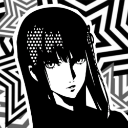

Star XVII

Hifumi Togo
Confidant Abilities
| Rank | Ability |
|---|---|
| 1 | Koma Sabaki: Allows you to swap current party with backup members during Joker's turn. |
| 2 | - |
| 3 | Uchikomi: Chance for follow-up by a backup member if Joker downs an enemy. |
| 4 | - |
| 5 | Kakoi Kuzushi: Allows you to attempt an escape, even when surrounded by the enemy. |
| 6 | - |
| 7 | Narikin: Earn double money if a battle is won in 1 turn after a successful ambush. |
| 8 | - |
| 9 | Touryou: Decreases turn delay to zero, allowing you to instantly escape battle. |
| 10 | Togo System: Allows you to swap current party with backup members during anyone's turn. |
Schedule
- Time of DayEvening
Day of Week: Monday, Wednesday, and Saturday
Location: Kanda Church
Rank Up Progression
| Rank | Requirements / Dialogue Choices | Next Pts |
|---|---|---|
| 1 | Requires Charm Lv 3 (Suave). Reward: Knowledge +1♪ | 0 |
| 2 | 1. "That's interesting." (+5) 3. "But you don't want to, right?" (+5) Reward: Knowledge +1♪ | 0 |
| 3 | 1. "Describes you perfectly." (+5) 2. "Having a difficult time?" (+5) 3. (Phone) "Bring it on." (+5) Reward: Knowledge +1♪ | 10 |
| 4 | 1. "I don't mind." / "Must've been the katsu curry." (+5) 2. "They're cool." (+5) 3. (Phone) "I'd love to." / "Where shall we go next?" (+5) | 14 |
| 5 | 1. "She's scary." (+5) 2. "You should stop then." (+5) 3. (Phone) "You've got a lot to deal with..." (+5) Reward: Knowledge +1♪ | 14 |
| 6 | 1. "Is that frustrating?" (+5) 2. "Do you still like shogi?" / "Do what you love." (+5) 3. (Phone) "You're imagining things." (+5) Reward: Knowledge +1♪ | 22 |
| 7 | 1. "It may come down to luck." (+10) 2. "I believe in you." (+10) Reward: Knowledge +1♪ | 0 |
| 8 | Requires Knowledge Lv 5 (Erudite) and completing "Upstaging the Stage Mother" request. 1. "That won't work." (+5) Actual Rank Up Dialogue: 1. "I'm glad her heart changed." (+10) 3. (Phone) "I support it." (+5) Reward: Knowledge +1♪ | 30 |
| 9 | 1. "Give it all you got." (+5) 2. "A very queenly decision." (+10) Friendship: "I want to become stronger." (+0) (Phone) Any (+5) Romance: "I want to stay by your side." (+0) / "I want us to date." (+0) (Phone) Any (+5) | 30 |
| 10 | N/A | - |
Gift Guide
| Gift Item | Confidant Points | Purchase Location | Price |
|---|---|---|---|
| Heart Ring | +50 | Jewelry Store, Station Underground Mall, Shibuya | ¥88,000 |
| Book Cover | +50 | Japan Sundries Shop, Station Underground Mall, Shibuya | ¥3,000 |
| Sakura Fan | +50 | Japan Sundries Shop, Station Underground Mall, Shibuya | ¥4,800 |
| Bath of Roses | +50 | Flower Shop, Shinjuku at Night | ¥3,200 |
Bonus Events
Hawaii Trip (9/10 - Requires Star Rank 5+)
- 1. "You look great!" (+15)
- 2. "Yeah, I'd like to try some." (+15)
- 3. "I had fun." (+15)
- 4. Any (+15)
- 5.
- Receive Honu Charm
Hangout Inokashira
- Any (+15)
Hangout Jinbocho (Requires Star Rank 8+)
- "Leave it to me." (+15)
- Receive King Piece
Hangout Wilton Buffet (Requires Star Rank 9+ Friendship Only)
- "I have a recommendation." (+15)
Hangout Odaiba (Requires Star Rank 9+ Romance Only)
- "You can always count on me." (+15)